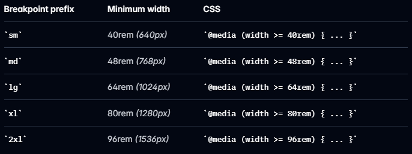

Tailwind
Author: Karina KupryianavaПлан лекции
- Что такое Tailwind?
- Utility-First подход
- Основы Tailwind
- Установка Tailwind в проект
- Демонстрация проекта Angular + Tailwind
- Проблемы классического подхода CSS
- Плюсы и минусы использования Tailwind
- Сравнение Tailwind, PrimeFlex, Bootstrap
Tailwind CSS
это utility-first CSS-фреймворк, который предоставляет набор готовых низкоуровневых классов для быстрого создания пользовательского интерфейса прямо в разметке.
Пример кода, стилизованный с помощью Tailwind CSS
Utility-First
Utility-First CSS — это архитектурный подход CSS, при котором используются готовые классы для стилизации элементов непосредственно в HTML-разметке, вместо того, чтобы создавать пользовательские классы для каждого блока.
Иван Иванов
Frontend Developer
.card {
background-color: white;
padding: 24px;
border-radius: 12px;
width: 300px;
}
.card-title {
font-size: 20px;
font-weight: 600;
margin-bottom: 8px;
}
.card-text {
color: #6b7280;
margin-bottom: 16px;
}
Иван Иванов
Frontend Developer
| Tailwind CSS | CSS style |
|---|---|
| bg-white | background-color: white |
| p-6 | padding: 1.5rem |
| rounded-xl | border-radius: 0.75rem |
| w-72 | width: 18rem |
Основы Tailwind
1. Utility Classes (служебные классы)
узкоспециализированные низкоуровневые классы, которые задают стиль для определенного аспекта элемента
Tailwind шпаргалка2. Адаптивный дизайн

Пользовательские брейкпойнты
@import "tailwindcss";
@theme {
--breakpoint-xs: 30rem;
--breakpoint-2xl: 100rem;
--breakpoint-3xl: 120rem;
}Контейнерные функции
стили задаются зависимости от размера родительского элемента
3. Директивы
- @import
@import "tailwindcss";@theme {
--font-display: "Satoshi", "sans-serif";
--breakpoint-3xl: 120rem;
}- @utility
@utility content-auto {
content-visibility: auto;
}.btn-primary {
@apply py-2 px-4 bg-blue-500 text-white
font-semibold rounded-lg shadow-md
hover:bg-blue-700 focus:outline-none
focus:ring-2 focus:ring-blue-400
focus:ring-opacity-75;
}
4. Система уровней
- base: для сброса стилей и тегов
- components: для многократно используемых элементов
- utilities: для специализированных вспомогательных классов
Директива @layer
указывает Tailwind, где в каскаде должны располагаться пользовательские стили
@layer base
Используется для установки базовых стилей для HTML-элементов (h1, p, a и т. д.).
@layer base {
h1 {
@apply text-4xl font-bold;
}
}✅ Используйте, когда:
нужно задать глобальную типографику или сбросить настройки по умолчанию.
@layer components
Здесь должны находиться многократно используемые стили (кнопки или карточки)
@layer components {
.btn-primary {
@apply px-4 py-2 bg-blue-600 text-white rounded;
}
}✅ Используйте, когда:
нужно определить компоненты, которые будут использоваться на сайте.
@layer utilities
Чтобы определить собственные служебные классы, например встроенные классы Tailwind.
@layer utilities {
.text-shadow {
text-shadow: 1px 1px 3px rgba(0, 0, 0, 0.3);
}
}✅ Используйте, когда:
нужны пользовательские вспомогательные функции, которые работают как утилиты Tailwind.
Установка Tailwind в проект
Tailwind Installation
- Установить Tailwind CSS
- Создать файл .postcssrc.json в корне проекта
- Импортировать Tailwind в основной CSS файл
npm install tailwindcss @tailwindcss/postcss postcss --force{
"plugins": {
"@tailwindcss/postcss": {}
}
}@import "tailwindcss";Демонстрация проекта Angular + Tailwind
Проблемы классического подхода CSS
1. Проблема с именованием
Как назвать класс для синей кнопки, которая немного больше обычной, но меньше большой, и у которой иногда есть иконка?
.button-medium-blue-with-optional-icon { }
.btn-md-primary-icon { }
.blue-button-with-icon-medium { }
2. Проблема каскадности
Итоговый стиль элемента определяется не одним правилом, а совокупностью всех применимых правил, которые могут переопределять друг друга в зависимости от специфичности, порядка объявления и наследования
/* В классе style.css */
.card {
padding: 20px;
}
/* Где-то в другом месте кодовой базы */
.sidebar .card {
padding: 10px;
}
/* В другом месте нужно переопределить это */
.main-content .sidebar .card {
padding: 20px !important;
}3. Размер файла
Традиционный CSS линейно разрастается по мере развития проекта. Каждый новый компонент — это новый CSS.
4. Необходимость переключения контекста
- Пишем HTML-код
- Переходим в файл CSS
- Создаем или находим подходящий класс
- Возвращаемся в HTML
- Применяем класс
- Возвращаемся в CSS для настройки
- Повторяем бесконечно
Чем Tailwind лучше?
1. Предсказуемость и единообразие
В CSS класс red-color может означать любой оттенок красного
- Интервалы: p-1 (4px), p-2 (8px), p-4 (16px)
- Цвета: blue-100 (светло-синий), blue-500 (синий), blue-900 (темно-синий)
- Шрифты: text-sm, text-base, text-lg, text-xl
2. Ускоренная разработка
Заменить цвет быстрее: bg-blue-300 на bg-green-500
Увеличить отступ: p-4 на p-6
3. Меньший размер пакета
Tailwind использует PurgeCSS для удаления неиспользуемых стилей. В итоговом пакете CSS содержатся только те классы, которые вы действительно используете.
Минусы использования Tailwind
1. Длинные строки классов
Решение: использовать @apply с переиспользуемыми компонентами
2. Очень много классов, новичку трудно ориентироваться
Решение: можно использовать шпаргалку
Tailwind шпаргалка3. Классы неинформативны
Решение: можно использовать дата-атрибуты
Сравнение Tailwind, PrimeFlex, Bootstrap
Tailwind 🆚 Bootstrap
| Критерий | Tailwind | Bootstrap |
|---|---|---|
| Подход | Utility-first | Component-first |
| Контроль над дизайном | Полный | Ограниченный темой |
| Кастомизация | Очень высокая | Средняя |
| Размер CSS | Маленький | Большой |
Tailwind 🆚 PrimeFlex
| Критерий | Tailwind | PrimeFlex |
|---|---|---|
| Подход | Utility-first | Utility-first |
| Возможности | все | layout (flex, grid), spacing |
| Дизайн-система | есть | нет полноценной дизайн-системы |
| Подход к стилям | может заменить CSS | комбинируется с CSS |